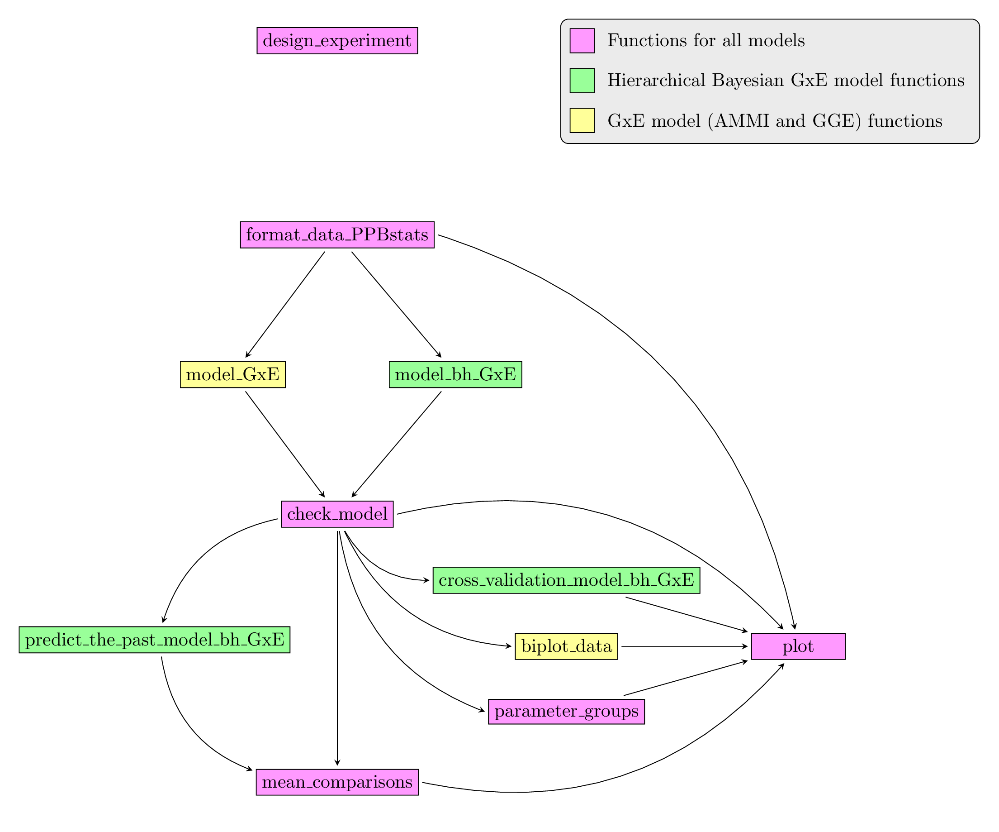

A full tutorial of PPBstats is available in a book.
Each section present a decision tree to chose the right analysis according to the quesitons and the constraints, theory behind each model is presented as well as complete reproductible examples based on a workflow.
Table of contents:
- Preface
- 1 Philosophy of PPBstats
- 2 Analysis of network seed circulation (M8)
-
3 Analysis of agronomic traits
- 3.1 Introduction
- 3.2 Design the experiment
- 3.3 Sow, note, harvest, measure …
- 3.4 Describe the data
- 3.5 Family 1 of analysis : Compare different varieties evaluated for selection in different locations
- 3.6 Family 2 of analysis : Study the response of varieties under selection over several environments
- 3.7 Family 3 of analysis : effects from family 1 and 2 in a network of farms
- 3.8 Family 4 of analysis : specific research questions on one farm or more
- 3.9 Family 5 of analysis : multivariate analysis
- 4 Sensory analysis
- 5 Molecular analysis (M3)
- 6 Communicate results to farmers
- Acknowledgement
- References

Example of workflow for family 2 of agronomic analysis.

Decision tree with objectives and analysis carry out in PPBstats. M refers to methods. D refers to experimental design.